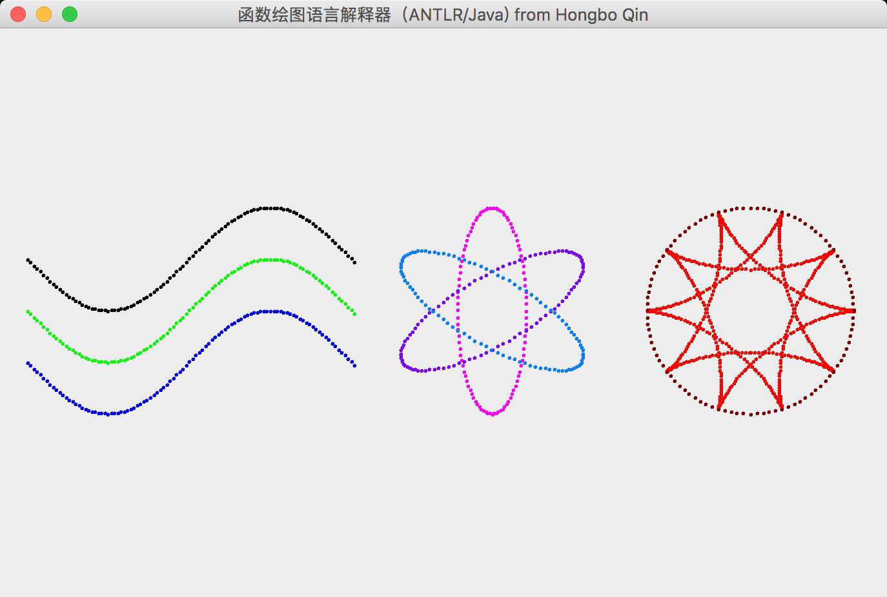
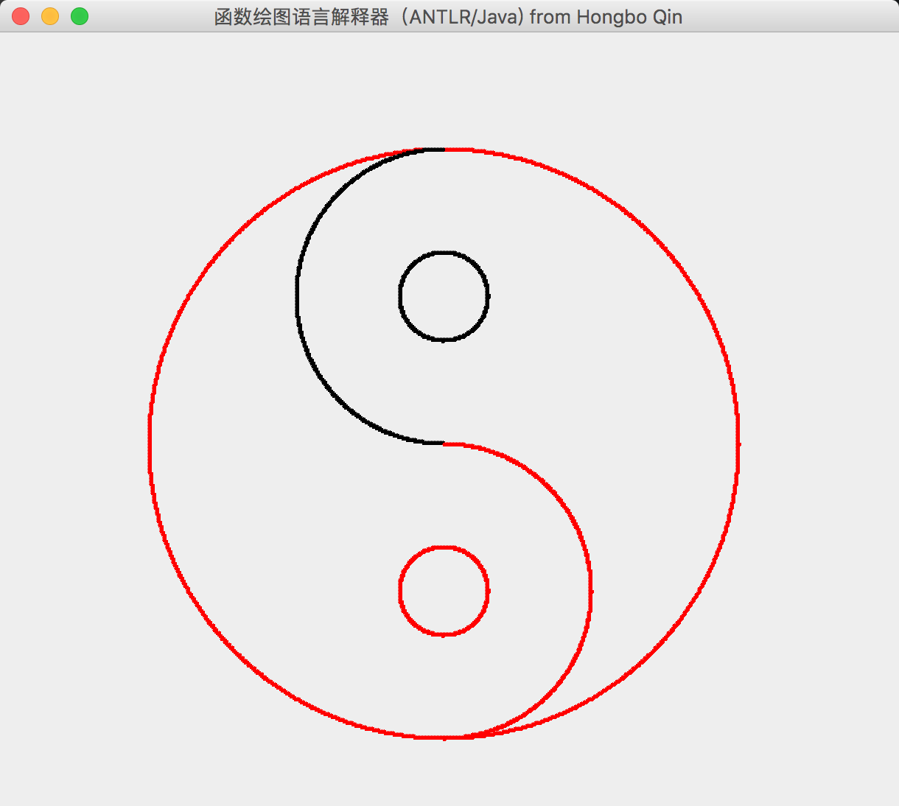

本文用于记录使用ANTLR实现一个简单绘图语言解释器的过程
一、实验环境
本节说明完成本次实验时所用的开发环境。
1.1软件环境
操作系统： MacOS High Sierra 版本10.13.6
工具：
- ANTLR 版本4.7.2
- VS Code 版本 1.33.1
- java 版本 1.8.0_121
1.2 硬件环境
MacBook Pro(Retina, 13-inch, Early 2015)
处理器 2.7 GHz Intel Core i5
内存 8 GB 1867 MHz DDR3
启动磁盘 Macintosh HD
图形卡 Intel Iris Graphics 6100 1536MB
二、实验内容
基本功能：
实现课件“上机ANTLR与漏洞分析.ppt”中规定的功能。
用ANTLR构造所需的词法分析器、语法分析器。
基于ANTLR，构造分析树的遍历器。它是语义计算模块，即解释器的后端。遍历器可选用 Listener 模式，也可选用 Visitor 模式，也可同时实现两种模式。
手工编写其他所需程序，包括主程序、语义分析与计算辅助程序等。
扩展功能：
实现绘图操作，即：在屏幕上绘制图形，并显示出来。
扩展函数绘图语言的功能，包括但不限于增加绘图效果的语句，如设置绘图颜色、线条粗细（点的大小）等等。
能够检查输入（即函数绘图语言编写的源程序）中存在的语义错误/漏洞，如死循环、无效参数、除数为0、要绘制的点超出窗口边界等，并进行错误报告。
支持输入中有用户自定义变量（类型均为double），并在后续的表达式中引用这些变量。
三、方法/思路
3.1模块划分
ANTLR源文件：
DrawGraph.g4
根据ANTLR源文件自动生成的代码：
DrawGraph.interp、DrawGraph.tokens、DrawGraphBaseListener.java、 DrawGraphLexer.interp、DrawGraphLexer.java、DrawGraphLexer.tokens、DrawGraphListener.java、DrawGraphParser.java
JAVA编写：
前端源代码：FrontEnd.java
后端源代码：BackEnd.java
主程序源代码：DrawLangMain.java
绘图相关源代码：BaseUI.java、UiPixelAttrib.java
监听者模式的遍历器：DrawerListener.java
3.2重要数据结构及算法
ANTLR源代码中出现的辅助定义:
1
2
3
4
5fragment A: [aA];
fragment B: [bB];
fragment C: [cC];
...
fragment Z: [zZ];通过引入该辅助定义，可以方便地定义大小写不敏感的简单绘图语言解释器，而不必在文法规则中繁琐地到处规定[aA]此类的形式
数据结构UiPixelAttrib，负责管控绘制像素的信息，具体包含RGB数值、像素点的大小
继承了DrawGraphBaseListener.java类的用户自定义监听者类DrawerListener.java，其中通过对ANTLR自动生成的标签接口进行重载，定义了语义对应的语法动作，以实现语法制导翻译。
四、源代码
4.1文件1: DrawGraph.g4
1 | grammar DrawGraph; |
4.2 文件2: BackEnd.java
1 | import org.antlr.v4.runtime.tree.*; |
4.3 文件3：FrontEnd.java
1 | import java.io.FileInputStream; |
4.4 文件4：UiPixelAttrib.java
1 | public class UiPixelAttrib { |
4.5 文件5：DrawLangMain.java
1 | public class DrawLangMain { |
4.6 文件6：DrawerListener.java
1 | import org.antlr.v4.runtime.*; |
五、测试用例及运行结果
5.1 测试用例1
测试文件1的内容：
1 | // this is comment |
运行结果：

5.2 测试用例2
测试文件2的内容：
1 | color is red; |
运行结果：

六、心得体会
从上一学期中使用Python从头到尾设计词法分析器、语法分析器、语法制导翻译；到如今的使用ANTLR规定语法规则、词法规则自动生成前端程序，自己动手设计遍历器的语义动作，编译原理与程序分析的课程设计让我充分明白了自动化编程的工作流程与意义。
经过这次实验，我体会到了避免重复造轮子的编程思想，同时也感受到了使用自动化编程工具提高生产力的力量。